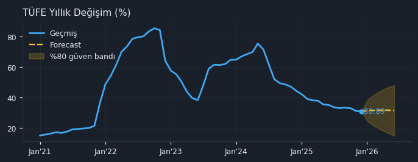
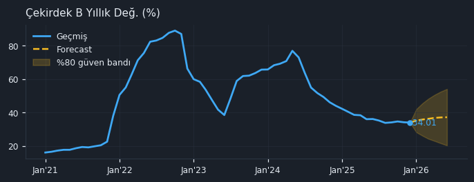
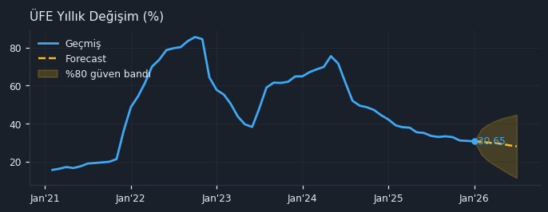
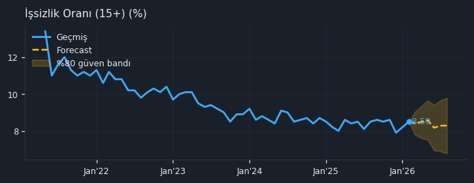
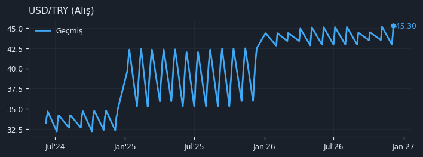

🇹🇷 TR Makro — 2026-05-12
Türkiye temel makro göstergeleri: TÜFE / Çekirdek B / ÜFE yıllık değişimleri, işsizlik (OECD), USD/TRY. Her gösterge için son değer, dönemsel değişim, 5 yıllık tarihsel grafik ve 6 ay forecast bandı (%80 güven). Aylık serilerin TCMB tarafından yayımlanmasında ortalama 10-30 gün gecikme normaldir.
🟠
Yüksek Enflasyon
TÜFE Y/Y 30.9% — yüksek seviye
TÜFE Y/Y: 30.9%Çekirdek Y/Y: 34.0%ÜFE Y/Y: 30.6%İşsizlik: 8.5%USD/TRY: 45.2951
💸 Enflasyon
TÜFE Yıllık Değişim TP.FE.OKTG01
Son değer30.89 %Tarih● 2025-12-01MoM-0.59%

📈 Forecast (+6 ay): 31.29 % [14.65 – 47.93, %80 güven] · ETS
Çekirdek B Yıllık Değ. TP.FE.OKTG02
Son değer34.01 %Tarih● 2025-12-01MoM-0.51%

📈 Forecast (+6 ay): 37.21 % [20.31 – 54.10, %80 güven] · ETS
ÜFE Yıllık Değişim TP.FG.J0
Son değer30.65 %Tarih● 2026-01-01MoM-0.79%

📈 Forecast (+6 ay): 28.05 % [11.40 – 44.69, %80 güven] · ETS
🏭 Büyüme & İstihdam
İşsizlik Oranı (15+) LRHUTTTTTRM156S
Son değer8.5 %Tarih● 2026-02-01MoM+3.66%Y/Y+3.66%

📈 Forecast (+6 ay): 8.3 % [6.8 – 9.8, %80 güven] · ETS
💵 Para & Kur
USD/TRY (Alış) TP.DK.USD.A.YTL
Son değer45.2951 Tarih● 2026-12-05Günlük+2.95%Y/Y+17.43%

Otomatik Yorum
Türkiye'nin makroekonomik görünümüne baktığımızda, enflasyon cephesinde manşet TÜFE'nin %30.89'a gerilemesi olumlu bir işaret olsa da, çekirdek enflasyonun %34.01 ile daha yüksek seyretmesi ve ÜFE'nin de %30.65'te kalması, fiyatlama baskılarının hala güçlü olduğunu gösteriyor. İşsizlik oranının %8.5'e yükselmesi ve aylık bazda belirgin bir artış göstermesi, istihdam piyasasında bir yavaşlamaya işaret edebilir. USD/TRY kurunun %2.95'lik aylık artışla 45.2951 seviyesine ulaşması, enflasyonist beklentileri körükleyerek döviz kuru ve enflasyon arasındaki kısır döngüyü besleme potansiyeli taşıyor. Genel olarak, Türkiye ekonomisi, enflasyonla mücadelede kısmi ilerlemeler kaydetse de, işsizlikteki artış ve kurdaki yükselişin yarattığı risklerle karşı karşıya.